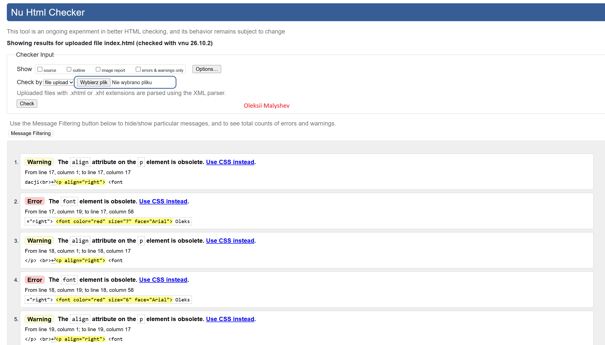
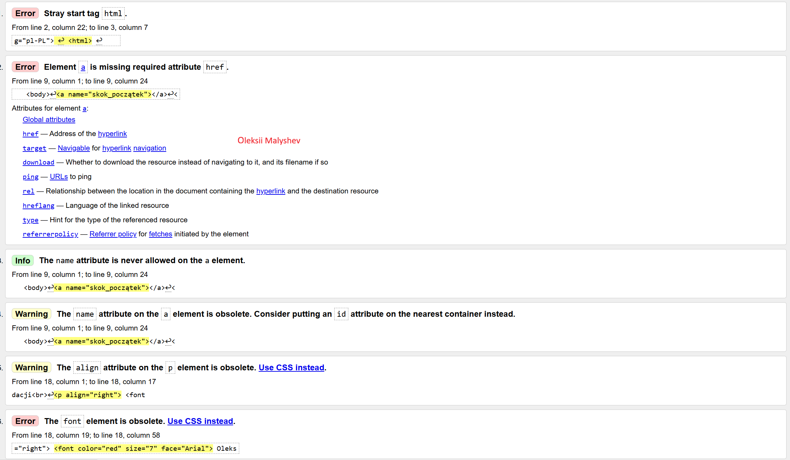

Oleksii
卐
✡
☭
ツ
ｼ
☺
Wygląd zadania drugiego
Adres: 81-350, Gdynia, Władysława IV, 24, 12.
Ulubiony aktor: Robert Downey Jr.
Ulubiony zespół muzyczny: Metallica.
Data urodzenia: 28 napewno_nie_listopada 2001.
H2SO4
x*x=x2
nazwisko ucznia imię ucznia Malyshev Oleksii
Znaki specjalne: © ® ™ & ° ± §
Możliwości formatowania tekstu w HTML.